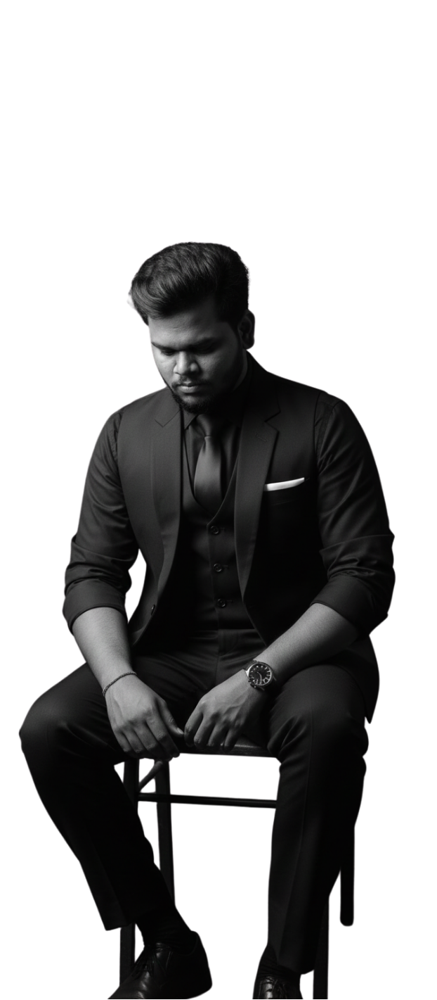

MY BIOGRAPHY
Skilled full-stack developer proficient in PHP, Laravel, Java, embedded systems, IoT, and UI/UX design, with numerous projects delivering scalable web apps, smart connected devices, and intuitive user interfaces for real-world applications.
Experienced educator who has trained over 1.5 lakh students in PHP, Laravel, Java, embedded systems, IoT, and UI/UX, empowering teams with practical skills for technology mastery and project success.
Skill & Interest
WEB DESIGN
EMBEDDED SYSTEMS
IOT
UIUX
FULL STACK